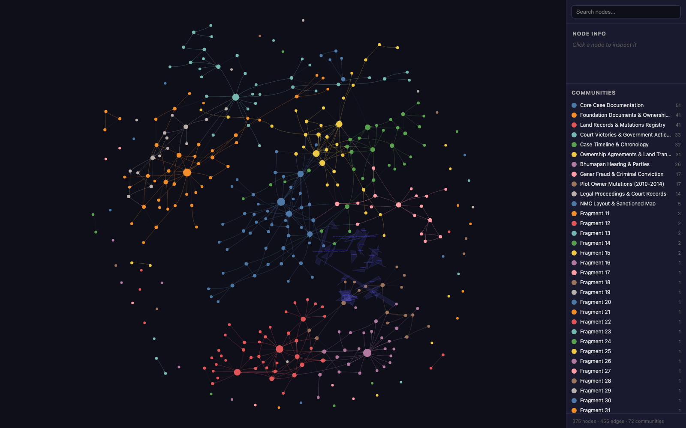

450+ real legal documents → provenance-tagged entity graph → Neo4j + GraphRAG retrieval
A production knowledge graph built from a real 40-year property-litigation corpus in India — 450+ documents spanning 1940–2026: registered sale deeds, court orders across multiple suits, government mutation registers, survey maps, receipts, and photographs of handwritten records in two languages. An LLM-agent extraction pipeline turns the entire paper trail into one queryable entity graph — with an honesty model that tags every relationship with its provenance and confidence.

The real graph: colored communities include “Core Case Documentation”, “Land Records & Mutations Registry”, “Court Victories & Government Acts”, “Ownership Agreements & Land Transactions”. Interactive HTML — search, click any entity, no server needed.
A 10-acre land parcel purchased in 1983–84 through a housing society, with an ownership chain reaching back to 1940 and an active dispute. The evidence lived in four decades of paper: 150+ scanned deeds and receipts, court records from multiple suits, government 7/12 extracts and khasra records, sanctioned layout maps — some handwritten in Marathi. No single person could hold the full picture. A question like “how does the 1987 receipt connect to the ownership gap the opposing party claims?” took days of manual cross-referencing across folders.
In legal work, an invented connection is worse than a missing one. Every relationship carries a provenance tag and a confidence score — nothing is silently dropped, nothing is silently invented.
| Tag | Meaning | Score | This corpus |
|---|---|---|---|
| EXTRACTED | Explicit in a source document (a deed names both parties) | 1.0 | 383 edges |
| INFERRED | Reasonable cross-document inference | 0.4–0.9 | 72 edges |
| AMBIGUOUS | Uncertain — flagged for human review | 0.1–0.3 | flagged & reviewed |
Community detection surfaced cross-document connections that were never filed together — the INFERRED bridge edges between communities are the highest-value output:
For entity-centric questions, graph traversal beats context stuffing. “Trace the ownership chain” against the raw corpus needs ~500K tokens of documents in context — and still misses cross-document links. The BFS retrieval engine matches question terms to entities, walks the graph, ranks the subgraph by relevance, and serializes it within a token budget: a ~2K-token subgraph where every node cites its source file. The LLM answers from the subgraph only — no hallucinated relationships, because the graph itself is provenance-tagged.
The graph exports to Neo4j two ways: a generated Cypher file (833 MERGE statements — idempotent, safe to re-run) for cypher-shell import, or a direct bolt-protocol push. Detected communities become node properties, so Neo4j Browser and Bloom color by cluster out of the box. The same graph also serves as an agent-facing surface — get_node, get_neighbors, shortest_path, get_community exposed as typed tools, so an AI agent asking “how are these two parties connected?” gets an evidence chain with citations instead of a hallucination.
The same architecture applies anywhere entities and relationships hide in document piles: legal tech (matters, clients, attorneys, invoices, contracts across practice-management platforms), compliance obligation tracing, M&A data-room diligence — and any AI agent platform, where a provenance-tagged knowledge graph is the most deterministic context an agent can retrieve from: every fact carries its source and its confidence.
The codebase and full graph data are in a private repository (the underlying corpus is an active family legal matter) — a live walkthrough is available on request.